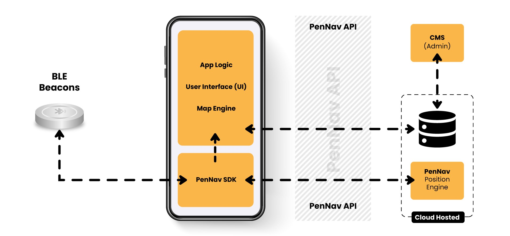

Developer Overview
The PenguinIN indoor wayfinding solution (PenNav) consists of a fully managed, cloud-hosted positioning engine and
an
SDK which is to be integrated within a venue’s mobile app. It enables visitors to access wayfinding functionality
from
the comfort of their smartphones.
In addition to wayfinding, PenNav offers application programming interface (API) to support application developers
enrich their applications with more features such as location-based messaging, and indoor analytics.
The diagram below provides an overview of the components of our indoor navigation solution.

- The Bluetooth Low Energy (BLE) beacons are assumed to be already in place during in-field testing. For early
testing, having a single beacon is enough.
- The mobile application: this is handled by the 3rd party app developers building a mobile application for the
client. The mobile application is responsible for all UI features including handling directory listing, display of
location-based messages, display of the route information, listing navigation instructions, drawing the location –
as conveyed by the SDK – on the map and all map functions including zoom, pan and rotate operations. To aid the
3rd party app developers, PenguinIN provides, a sample application for both Android and iOS.
- Mobile SDK: provides filtered, ready-to-use position information to the application layer.
- Position Engine: cloud-hosted service responsible for calculating the location and sharing it with the SDK. The
mobile application must be able to reach this service in order for the an up-to-date position to be established.
- Application Programming Interface: information required by 3rd party app developers is made available
through an API. This - for example - includes the map image, the list of points-of-interest, possible routes,
enterance locations to points of interest and other information.
If you have a question, please check our FAQ page, or send us a message to
support@penguinin.com